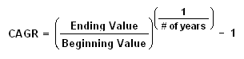

The return an investment provides over a period of time, expressed as a time-weighted annual percentage. Sources of returns can include dividends, returns of capital and capital appreciation. The rate of annual return is measured against the initial amount of the investment and represents a geometric mean rather than a simple arithmetic mean.
Annual return is the de facto method for comparing the performance of investments with liquidity, which includes stocks, bonds, funds, commodities and some types of derivatives. Different asset classes are considered to have different strata of annual returns.
For example, consider an investor that purchases a stock on January 1, 2000, for $20. The investor then sells it on January 1, 2005, for $35 - a $15 profit. The investor also received a total of $2 in dividends over the five-year holding period. In this example, the investor's total return over five years would be $17, or (17/20) 85% of the initial investment. The annual return required to achieve 85% over five years follows the formula for the compound annual growth rate (CAGR):
(37/20) ^(1/5 (yr)) - 1 = 13.1% annual return
Annual-return statistics are commonly quoted in promotional materials for mutual funds, ETFs and other individual securities.
{kind=link}